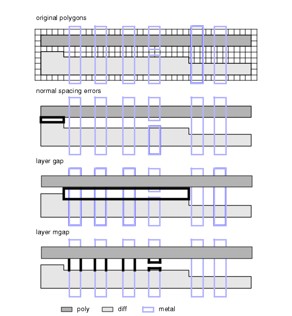
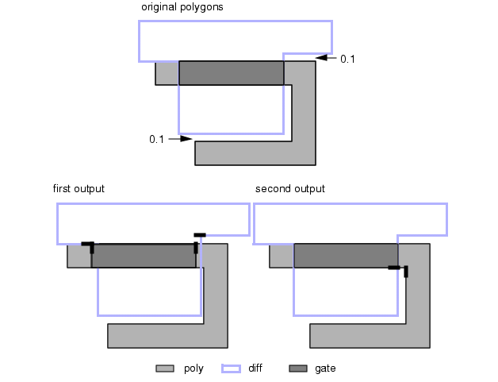

Spacing Checks
This section
contains examples of nmDRC spacing checks.
Minimum metal spacing (same layer)
Metal_Spacing { @ Minimum spacing: ^metal_spacing um
EXTERNAL metal < metal_spacing ABUT < 90 SINGULAR SQUARE
}Spacing between varying-width objects
Shrunk_Metal1 = SIZE Metal1 BY metal1_shrink
Wide_Metal1 = SIZE Shrunk_Metal1 BY metal1_enlarge
Wide_M1_Edges = Metal1 COINCIDENT EDGE Wide_Metal1
Thin_M1_Edges = Metal1 NOT COINCIDENT EDGE Wide_Metal1
Wide_M1_Spacing {
@ (width >= ^wide_metal1_width um) spacing:
@ ^wide_metal1_spacing um
EXTERNAL Wide_M1_Edges < wide_metal1_spacing
}
Wide_to_Thin_M1_Spacing {
@ over distances of ^wide_metal1_length um:
@ ^wide_metal1_spacing um
EXTERNAL Wide_M1_Edges Thin_M1_Edges < wide_metal1_spacing
PARALLEL PROJECTING > wide_metal1_length
}Minimum spacing gate to well tap
// Size Tap CT1 by chunks in these two checks, rather than
// in one jump of the full rule. This prevents the check
// from jumping across a well and picking up a well tie
// there. tap_size_increment = 1/5 tap_gate_spacing
NTap_PGate_Spacing { @ Maximum: ^tap_gate_spacing
X1 = SIZE Tap_CT1 BY tap_size_increment
X2 = X1 AND NWell
X3 = SIZE X2 BY tap_size_increment
X4 = X3 AND NWell
X5 = SIZE X4 BY tap_size_increment
X6 = X5 AND NWell
X7 = SIZE X6 BY tap_size_increment
X8 = X7 AND NWell
X9 = SIZE X8 BY tap_size_increment
gate NOT X9
}Spacing between any edge on same layer
METAL_SPACING { EXTERNAL metal < 5 ABUT < 90 SINGULAR }Spacing between edges on same polygon
METAL_NOTCH { metal external < 3.5 notch abut < 90 singular
// Check spacing in the same polygon.
}Well tap to source-drain spacing
Tap_to_Act_Spacing {
@ Minimum spacing same potential: 0 um.
@ Different potentials: ^tap_spacing um
Good = EXTERNAL Tap Active == 0 ABUT == 0 CONNECTED REGION
Bad = EXTERNAL Tap Active < tap_spacing ABUT == 0 REGION
Bad NOT Good
}Spacing between different polygons on same layer
METAL_SPACING { metal external < 4 space abut < 90 singular
// Spacing between polygons, same layer.
}Spacing metal to wide metal on single layer
METAL_TO_FAT_METAL_SPACING {
@ Metal to fat metal spacing must be 4 microns.
@ DO NOT check notches!
@ (Fat metal is any metal fatter than 5 microns).
x = SIZE metal BY -2.5
y = SIZE x BY 2.5
// Chunks of fat metal (typical technique).
// Layer z will get edges from the original metal layer
// which are on fat pieces. This gets rid of edges on y
// which were not originally on metal (eliminating false
// errors). Also, since z and metal have the same layer of
// origin, we can stipulate spacing only in the
// external operation below since it is really a one-layer
// dimensional check operation.
z = metal COINCIDENT EDGE y // Metal edges on fat metal.
EXT z metal < 4 SPACE // Check spacing only (no notch).
}Poly-diffusion separation
// POLY AND DIFFUSION SEPARATION CHECK
POLY_DIFF_SEP {
@ Separation of poly and diffusion must be greater than
@ or equal to 3 microns except where both poly width and
@ diffusion width is less than 3 microns; in that case, the
@ separation must be greater than or equal to 4 microns.
X = internal [poly] < 3
Y = internal [diff] < 3
external poly diff < 3
external X Y < 4
}Figure 1. POLY_DIFF_SEP
Spacing with width-to-length dependencies
METAL_SPACING {
@ Metal to metal spacing must be greater than or equal to 4
@ microns except where (1) the metal edge length is greater
@ than 10 microns and, (2) the width in case (1) is less than
@ 3 microns. In the latter case, the metal spacing to edges
@ satisfying both (1) and (2) must be greater than or equal to
@ 5 microns.
external metal < 4
X = metal length > 10
Y = internal metal [X] < 3
external metal Y < 5}Figure 2. METAL_SPACING
Corner effect separation
BC_CORNER_ERROR {
@ Separation of B and C must normally be greater than or equal
@ to 3 microns. When A is inside B and closer than 2 microns,
@ then the spacing between B and C at that point must be
@ increased to 4 microns and this spacing must extend for two
@ microns beyond each corner of A.
external B C < 3 opposite
X = enclosure A [B] < 2 square
external X C < 4 opposite}Figure 3. BC_CORNER_ERROR
Spacing with simple halation
Metal_Halation {
// METAL SPACING WITH SIMPLE HALATION EXCEPTION
@ Metal spacing must be 3 microns except between parallel
@ edges whose common projective edge length is greater than or
@ equal to 20 microns; in that case, the spacing must be 4
@ microns.
EXT metal < 3 ABUT < 90 SINGULAR// Normal rule
// Halation exception follows. Note the use of the OPPOSITE
// metric for more precise measurement and the interval
// constraint to avoid duplicating errors from the normal
// rule.
EXT metal >= 3 < 4 PARALLEL ONLY OPPOSITE PROJECTING >= 20}Spacing between angled edges
Poly_Spacing_both_angled {
EXT poly < 3 ANGLED == 2
// Measure two edges only if both are angled.
}
Poly_Spacing_oneplus_angled {
EXT poly < 3 ANGLED
// Measure two edges only if at least one is angled.
}
Poly_Spacing_oneonly_angled {
EXT poly < 3 ANGLED == 1
// Measure two edges only if exactly one is angled.
}
Poly_Spacing_neither_angled {
EXT poly < 3 ANGLED == 0
// Measure two edges only if neither one is angled.
}Spacing one layer corner-to-corner
poly_spacing {
@ poly spacing = 2 with the square metric applied for
@ corner to edge and corner to corner spacings.
EXT poly < 2 NOT CORNER
EXT poly < 2 CORNER SQUARE
}
poly_spacing {
@ poly spacing = 2 with the square metric applied
@ to corner-to-corner spacings.
@ Corner-to-edge spacing is 2.5.
EXT poly < 2 NOT CORNER
EXT poly < 2 CORNER TO CORNER SQUARE
EXT poly < 2.5 CORNER TO EDGE
}Spacing two layer corner-to-corner
poly_spacing {
@ poly to diff spacing = 2 with the square metric applied
@ for corner to edge and corner to corner spacings.
EXT poly diff < 2 NOT CORNER
EXT poly diff < 2 CORNER SQUARE
}Spacing of specified range of angles on a single layer
"ACUTE ANGLE LENGTH CHECK" {
@ Measure the length of sides of an single layer acute angle
@ for lengths > 3
INTERNAL layer1 < 3 ABUT < 90
EXTERNAL layer1 < 3 ABUT < 90}Figure 4. ACUTE ANGLE LENGTH CHECK
Spacing of specified range of angles on two layers
ACUTE_TWO_LAY1 {
@ Catch acute angles between polygons on different layers in a
@ two-layer external check.
external metal poly < 3 abut > 0 < 90
//0 was excluded from the abut constraint so that edges which
//are coincident outside would not also be output.
}
ACUTE_TWO_LAY2 {
@ Additional output (in addition to acute angles) of
@ coincident outside edges
external metal poly < 3 abut < 90
}
ACUTE_TWO_LAY3 {
@ ONLY coincident outside edges to be additionally output
external metal poly < 3 abut == 0
}Spacing with third layer dependencies
POLY_DIFF_SPACING {
@ This rule uses both polygon-directed output and the
@ intersecting only filter.Poly to diff spacing is normally 1
@ micron. However, if two metal wires completely cross the
@ area between poly and diff, are perpendicular to both poly
@ and diff, and are closer than 3 microns apart, then the
@ spacing between poly and diff BETWEEN the metal wires must
@ be increased to 2 microns.
// Normal spacing rule.
EXTERNAL poly diff < 1 REGION OPPOSITE
// Form the regions between poly and diff where the spacing is
// less than 2 microns. Call this region the "gap".
gap = EXTERNAL poly diff >= 1 < 2 REGION OPPOSITE
// Select all metal edges which span the "gap" and are
// perpendicular to both poly and diff. Note that the metal
// wires must completely span the gap.
mgap = metal INSIDE EDGE gap // Metal edges in the gap
X = EXTERNAL [mgap] poly < 2 ABUT == 90 INTERSECTING ONLY
Y = EXTERNAL [X] diff < 2 ABUT == 90 INTERSECTING ONLY
// The errors can now be flagged between the edges in layer Y
// since these edges completely span the gap perpendicular to
// it.
EXTERNAL Y < 3 REGION OPPOSITE
}Figure 5. POLY_DIFF_SPACING (part 1)

Figure 6. POLY_DIFF_SPACING (part 2)

Poly-diff corner spacing
Rule7.4 {
@ Poly spacing to source/drain corner must be 1.2 whenever the
@ poly gate length is less than 1.6 and poly extension over
@ gate is less than 1.4.
x = ENC diff poly < 1.4 REGION OPPOSITE // Small extensions.
y = x NOT COINCIDENT EDGE diff // Sans gate edges
z = INT [y] < 1.6 OPPOSITE // Small extensions at short gates.
EXT z diff < 1.2 OPPOSITE // Errors
} Figure 7. Rule7.4
Poly-diffusion spacing at gate bend
poly_to_diff1 {
@ Normally, there is no spacing rule between poly and
@ diffusion. However, when either poly or diffusion bends
@ after forming a gate, the spacing must be 0.2 microns with
@ no touching allowed.
// potential error regions follow:
x = EXT poly diffusion < 0.2 ABUT == 0 REGION OPPOSITE
y = EXT [ x ] gate < 0.1 ABUT == 0 SINGULAR
// 0.1 is arbitrary
x WITH EDGE y // real error regions
}Figure 8. poly_to_diff1

poly_to_diff2 {
@ Normally, there is no spacing rule between poly and
@ diffusion. However, when either poly or diffusion bends
@ after forming a gate, the spacing must be 0.2 microns with
@ no touching allowed. Uses perpendicular only and abut
@ options:
EXT gate diffusion < 0.2 PERPENDICULAR ONLY ABUT == 90
EXT gate poly < 0.2 PERPENDICULAR ONLY ABUT == 90
}Figure 9. poly_to_diff2

Notch spacing
NARROW_NOTCH {
@ If the width of a notch in mask B is less than 4, then the
@ area of that notch coincident with mask A must be greater
@ than or equal to 12.
narrow_notches = external B < 4 region notch
X = narrow_notches and A
area X < 12
}Figure 10. NARROW_NOTCH